Section8 Data Mining et Data Visualization en pratique
Reprenons la base de données sur les offres d’emplois de Pôle emploi (devenu France Travail) de l’année 2020 disponibles sur Paris et la petite couronne, et commençons notre analyse descriptive des informations présentes dans cette base en construisant des graphiques pour répondre à certaines questions relatives à ces ces offres d’emploi. On pourra ainsi étudier l’évolution au cours de l’année de ces offres d’emplois.
# Appelons la table si elle n'est pas déjà dans votre environnement
OffresPE_2020 <- readRDS("data/OffresPE_2020.Rdata")
# Rappel des variables présentes et de leurs noms
names(OffresPE_2020) [1] "date_firstSeenDay" "date_scraping"
[3] "date_sitePublicationDay" "job_title"
[5] "job_ROME_code" "job_qualification"
[7] "contractType" "contractDuration_min"
[9] "contractDuration_max" "contractDuration_period"
[11] "contractDuration_value" "workTime_hours"
[13] "workTime_category" "workTime_value"
[15] "location_label" "location_zipcode"
[17] "location_departement" "salary_min"
[19] "salary_max" "salary_period"
[21] "salary_value" "salary_hourly_mean"
[23] "salary_hourly_min" "salary_hourly_max"
[25] "entreprise_nom" "entrepriseSecteur_NAF88"
[27] "entrepriseSecteur_NAF21" "teleworking_mentioned"
[29] "experience_min" "experience_max"
[31] "education_level" 8.1 Exemple de la construction d’un graphique pas à pas
On va chercher à représenter la distribution de la durée des contrats (pour rappel exprimée en jours) pour les offres d’emplois en contrat à durée déterminée (CDD) et en intérim (MIS) en fonction du mois. Notre variable principale est donc contractDuration_value, et la variable “secondaire” ou fonction de la première sera à construite à partir de la date de publication de l’offre date_sitePublicationDay.
Pour représenter la distribution d’une variable quantitative ou continue, on peut utiliser un histogramme (ou/et une courbe de densité), mais comme ici on veut la représenter selon une autre variable peut-être serait-il mieux d’utiliser une boîte à moustache qui donnera les principaux éléments de description de la distribution de cette variable.
Nous avons déjà vu ces deux graphiques précédemment, mais reprenons-les pour voir dans le détail comment nous les construisons !
D’abord, on va créer une boîte à moustache pour représenter la distribution de la variable contractDuration_value:
OffresPE_2020 %>%
filter(contractType %in% c("CDD", "MIS")) %>%
ggplot() + aes(x = contractDuration_value) + geom_boxplot()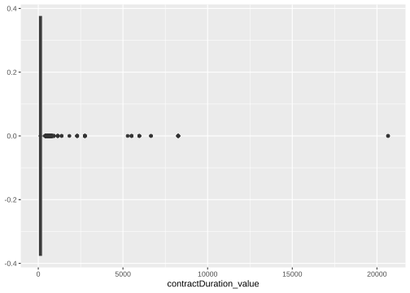
Comme il reste des valeurs aberrantes (cf. section 3.2.3. de la séance 1 de ce cours) et des valeurs manquantes (objet de l’“Avis”), il faut un peu nettoyer la base, regardons plus précisément ces valeurs aberrantes en haut de la distribution :# Pour revoir cette distribution
OffresPE_2020 %>% filter(contractType %in% c("CDD", "MIS")) %>%
arrange(desc(contractDuration_value)) %>%
select(contractType, contractDuration_value, contractDuration_period,
contractDuration_min, contractDuration_max, job_title, entrepriseSecteur_NAF21)# A tibble: 92,563 × 7
contractType contractDuration_value contractDuration_period
<chr> <dbl> <chr>
1 CDD 20656 YEAR
2 CDD 20656 YEAR
3 CDD 8262 YEAR
4 CDD 8262 YEAR
5 CDD 8262 YEAR
6 CDD 8262 YEAR
7 CDD 8262 YEAR
8 CDD 8262 YEAR
9 CDD 8262 YEAR
10 CDD 6656 YEAR
# ℹ 92,553 more rows
# ℹ 4 more variables: contractDuration_min <dbl>, contractDuration_max <dbl>,
# job_title <chr>, entrepriseSecteur_NAF21 <chr>On voit qu’il y a vraisemblablement un problème pour les premières observations de ces valeurs aberrantes puisque la période dans laquelle la durée du contrat est exprimée (variable contractDuration_period) serait l’année, alors qu’il s’agit probablement plutôt de mois ou de jours étant donné les valeurs minimum et maximum, on va donc supprimer ces observations car il semble difficile de les modifier sans savoir quelle est la bonne temporalité dans laquelle elles sont exprimées et aussi car il ne s’agit que de 42 observations.
OffresPE_2020 <- OffresPE_2020 %>%
filter(!(contractType %in% c("CDD", "MIS") &
contractDuration_period=="YEAR" &
contractDuration_value>780))
OffresPE_2020 %>%
filter(contractType %in% c("CDD", "MIS") & !is.na(contractDuration_value)) %>%
ggplot() + aes(x = contractDuration_value) + geom_boxplot()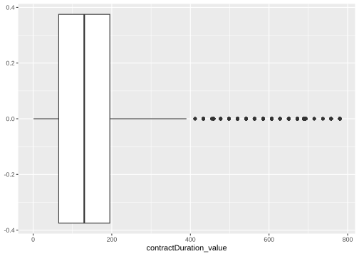
C’est plus lisible, même s’il reste des valeurs élevées et supérieures à la durée maximale d’un CDD dans le secteur privée qui est de 18 mois, soit environ 549 jours, mais il est possible d’avoir des CDD plus longs dans la fonctions publique, nous pouvonr éventuellement rajouter un filtre sur le secteur d’activité pour éviter d’avoir des offres émanant de l’administration publique pour pouvoir comparer ce qui est comparable !Ou nous pouvons procéder à des paramétrages supplémentaires pour que la boxplot soit davantage visible. On peut par exemple utiliser une option pour mettre une échelle moins grande en abcisse. Plusieurs manières de faire existent, mais l’une d’entre elles équivaut à supprimer les valeurs, alors qu’une autre permet de les garder et juste de ne pas les faire apparaître sur le graphique, cela peut-être important si ensuite nous voulons ajoutons des statistiques comme la moyenne sur le boxplot, comme nous allons le voir.
La première manière est d’utiliser l’argument scale_x_continuous() et l’option limits=c() pour indiquer les nouvelles valeurs de l’échelle, par exemple ici entre 1 et 2 000, mais un avertissement est alors donné : 1151 lignes ont été supprimées, si nous ajoutons ensuite la moyenne, elle sera calculée sans ces 1151 observations, cela peut donc changer les indicateurs de moyenne, voire de médiane, ce n’est donc pas rigoureux.
Utilisons plutôt la seconde méthode maintenant, avec l’option xlim() à intégrer dans la fonction coord_cartesian() qui fait l’équivalent d’un zoom sur le graphique sans supprimer des observations :
# 1ère méthode :
# OffresPE_2020 %>% filter(contractType %in% c("CDD", "MIS") & !is.na(contractDuration_value)) %>%
# ggplot() + aes(x = contractDuration_value) + geom_boxplot() +
# scale_x_continuous(limits = c(1, 550))
# 2nde méthode plus rigoureuse :
OffresPE_2020 %>%
filter(contractType %in% c("CDD", "MIS") & !is.na(contractDuration_value)) %>%
ggplot() + aes(x = contractDuration_value) + geom_boxplot() +
coord_cartesian(xlim=c(0,550))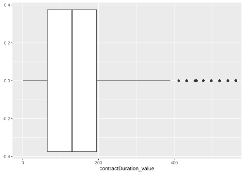
Ensuite, nous souhaitons représenter la distribution de cette variable selon le mois de publication de l’offre) : nous allons pour cela créer une variable mois_publication à partir d’une fonction relative à la date puis nous l’ordonnons ; et nous allons en profiter pour préciser un peu l’échelle des abscisses (réduire le “pas” avec l’option breaks=seq() en mettant tous les 30 jours pour voir à peu près les mois) :
OffresPE_2020 %>%
filter(contractType %in% c("CDD", "MIS") & !is.na(contractDuration_value)) %>%
mutate(mois_publication = months(date_sitePublicationDay, abbreviate = T),
mois_publication = factor(mois_publication,
levels = c("déc.","nov.","oct.","sept.", "août", "juil.",
"juin","mai","avr.", "mars", "févr.", "janv."))) %>%
ggplot() + aes(x = contractDuration_value, y=mois_publication) + geom_boxplot() +
coord_cartesian(xlim=c(0,550)) +
scale_x_continuous(breaks=seq(0,550,30))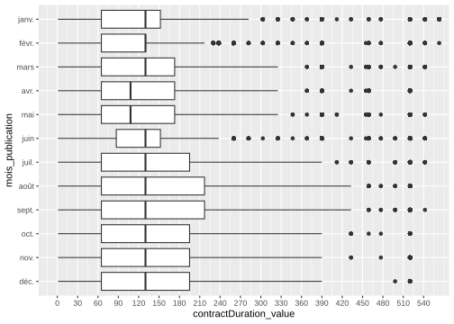
On voit que la médiane est plutôt stable entre les mois, sauf en mai et en avril, et par ailleurs les valeurs Q3 varient beaucoup entre les mois.Nous pouvons également ajouter la moyenne, puisqu’ici nous voyons de gauche à droite, le minimum, le 1er quartile, la médiane, le 3ème quartile, le maximum et les “outliers” (points aberrants selon les statistiques de la boxplot). Pour cela, il faut utiliser la “couche” statistique de ggplot() avec la fonction stat_summary() et les options fun = mean pour la moyenne, geom = point pour qu’elle soit représentée par un point, color="gray50" pour qu’elle se différencie des autres points et soit en gris, et éventuellement size=2 pour jouer sur la taille du point.
# Pour infos, les options de `geom =` dans `stat_summary()` sont par exemple :
# "point", "pointrange", "crossbar", "bar" (cell-ci à ne pas utiliser ici néanmoins !)
OffresPE_2020 %>%
filter(contractType %in% c("CDD", "MIS") & !is.na(contractDuration_value)) %>%
mutate(mois_publication = months(date_sitePublicationDay, abbreviate = T),
mois_publication = factor(mois_publication,
levels = c("déc.","nov.","oct.","sept.", "août", "juil.",
"juin","mai","avr.", "mars", "févr.", "janv."))) %>%
ggplot() + aes(x = contractDuration_value, y=mois_publication) +
geom_boxplot() +
stat_summary(fun=mean, geom="point", color="gray50", size=2) +
coord_cartesian(xlim=c(0,550)) +
scale_x_continuous(breaks=seq(0,550,30))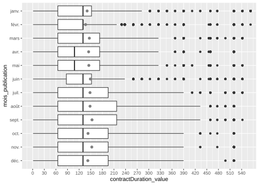
On observe ainsi des différences entre la moyenne et la médiane, puisque la moyenne est toujours supérieure à la médiane puisque tirée par des valeurs plus souvent très élevées que très faibles (plus de points au-delà du maximum que l’inverse), mais elle semble moins varier selon les mois.On peut aussi vouloir enlever les outliers avec l’option outlier.shape de geom_boxplot() comme ceci : geom_boxplot(outlier.shape = NA).
On peut encore vouloir ordonner l’affichage des années par ordre décroissant de la médiane ou de la moyenne (ordre décroissant ici = valeur la plus élevée en haut du graphique). Nous pouvons, entre autres, utiliser pour cela la fonction fct_reorder() du package forcats déjà présenté dans la section 3.2 de ce cours (Séance 1) : nous pouvons alors directement l’intégrer dans l’aes de ggplot dans la variable en ordonnée y=fct_reorder(), il faut pour cela mettre entre parenthèses la variable utilisée en ordonnée, suivie de la variable par laquelle on ordonne (la même que celle utilisée dans x=). Utilisée dans un boxplot, cela ordonne par défaut selon la médiane ; si on veut que les régions soient ordonnées par la moyenne, il faut rajouter l’option .fun=mean dans la fonction fct_reorder(), cf. le code en-dessous.
OffresPE_2020 %>%
filter(contractType %in% c("CDD", "MIS") & !is.na(contractDuration_value)) %>%
mutate(mois_publication = months(date_sitePublicationDay, abbreviate = T)) %>%
ggplot() +
aes(x = contractDuration_value,
y = fct_reorder(mois_publication, contractDuration_value, .fun=mean)) +
geom_boxplot(outlier.shape = NA) +
stat_summary(fun=mean, geom="point", color="gray50", size=2) +
coord_cartesian(xlim=c(0,550)) +
scale_x_continuous(breaks=seq(0,550,30))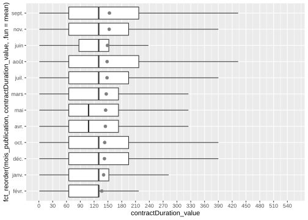
On observe que les offres d’emploi avec des contrats légèrement plus longs sont plus probables au mois de septembre puis de novembre, alors qu’en début d’année civile (janvier et février) c’est là où les moyennes sont les plus basses. Cependant, comme ici notre seconde variable est une variable temporelle - le mois -, cela n’est pas forcément pertinent de modifier l’ordre du graphique pour le mettre selon la moyenne car cela pourrait perturber la lecture du graphique. On va revenir sur le graphique précédent donc.
Nous arrivons à un graphique intéressant, il faut maintenant améliorer la description autour : noms des axes, titres, légende informative sous le graphique (avec notamment un avertissement sur les valeurs non affichées sur le graphique), éventuellement un peu de couleur (avec fill= non pas dans l’aes() mais dans la fonction geom_boxplot() pour qu’elle soit identique quel que soit le département), etc.
Cela se fait avec la fonction labs(), et ensuite la fonction theme().
Une petite astuce pour les titres pour qu’ils ne soient pas coupés sur le graphe : \n collé à un mot (sans espace) permet de mettre à la ligne à partir de ce mot !
OffresPE_2020 %>%
filter(contractType %in% c("CDD", "MIS") & !is.na(contractDuration_value)) %>%
mutate(mois_publication = months(date_sitePublicationDay, abbreviate = T),
mois_publication = factor(mois_publication,
levels = c("déc.","nov.","oct.","sept.", "août", "juil.",
"juin","mai","avr.", "mars", "févr.", "janv."))) %>%
ggplot() + aes(x = contractDuration_value, y=mois_publication) +
geom_boxplot(outlier.shape = NA, fill="khaki") +
stat_summary(fun=mean, geom="point", color="gray50", size=2) +
coord_cartesian(xlim=c(0,550)) +
scale_x_continuous(breaks=seq(0,550,30)) +
labs(title="Distribution de la durée des offres d'emploi en CDD et missions d'intérim dans Paris \net sa petite couronne en 2020",
x="Durée du contrat proposé en mois", y="Mois",
caption="Remarques : Les valeurs au-dessus de 550 jours soit 18 mois ne sont pas affichées ; les points \nau-delà du minimum et maximum non plus ; les points en gris représentent la moyenne. \nSource : Base 'JOCAS', offres d'emploi émanant uniquement de Pôle emploi (auj. France Travail), 2020. \nCalculs : Camille Signoretto.") +
theme(plot.caption = element_text(hjust=0),
plot.title = element_text(size=12),
axis.title.x = element_text(size=10),
axis.title.y = element_text(size=10))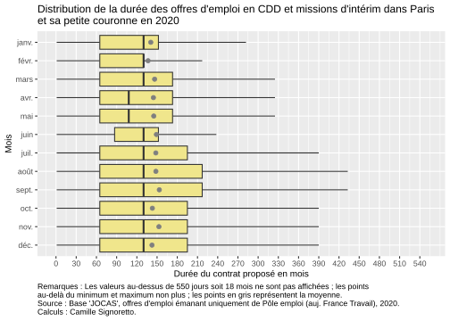
Voilà un premier graphique construit avec la grammaire de ggplot(). À vous maintenant de construire vous-mêmes les graphiques qui vous sont suggérés dans la section suivante !
8.2 D’autres exemples à travers des exercices
8.2.1 Distribution de la durée des contrats proposés, selon le type de contrat
Construisez le même type de graphique mais cette fois à partir d’une densité de distribution selon le type de contrat - CDD ou intérim. N’hésitez pas à changer les options pour le mettre à votre goût !!
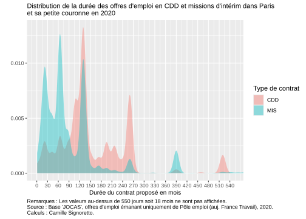
OffresPE_2020 %>%
filter(contractType %in% c("CDD", "MIS") & !is.na(contractDuration_value)) %>%
ggplot() +
aes(x = contractDuration_value, fill = contractType) +
geom_density(alpha = 0.4, color=NA) +
coord_cartesian(xlim=c(0,550)) +
scale_x_continuous(breaks=seq(0,550,30)) +
labs(title="Distribution de la durée des offres d'emploi en CDD et missions d'intérim dans Paris \net sa petite couronne en 2020",
x="Durée du contrat proposé en mois", y="", fill="Type de contrat",
caption="Remarques : Les valeurs au-dessus de 550 jours soit 18 mois ne sont pas affichées. \nSource : Base 'JOCAS', offres d'emploi émanant uniquement de Pôle emploi (auj. France Travail), 2020. \nCalculs : Camille Signoretto.") +
theme(plot.caption = element_text(hjust=0),
plot.title = element_text(size=11),
axis.title.x = element_text(size=10),
axis.title.y = element_text(size=10))8.2.2 Comparaison des montants moyen et médian des durées de contrat des offres d’emplois, par secteur d’activité
Construisez maintenant un graphique mettant l’un à côté de l’autre deux graphes en bâtons représentant respectivement la durée moyenne et la durée médiane des offres d’emploi selon le secteur d’activité.
Pour vous aider si besoin, réfléchissez par étapes :
- il est bien de commencer par créer une variable en regroupant certains secteurs et en leur donnant un nom complet pour pouvoir plus facilement les identifier ;
- créer un premier graphe que vous assignerez à un nouvel objet et qui représentera celui de la moyenne par secteur ;
- vous pouvez pour cela créer une nouvelle variable qui constituera la moyenne pour chaque secteur (un conseil : arrondir à l’unité) ;
- sélectionnez les variables qui seront utilisées dans le graphique et vérifier (ou corriger sinon) qu’il n’y ait pas des doublons (lignes identiques) car cela peut fausser le graphique ;
- construisez le graphique avec
ggplot()et la bonne fonctiongeom_***(); - faîtes de même pour la médiane par secteur ;
- vous pouvez ensuite mettre ces graphiques côte à côté avec le package
patchwork(qu’il vous faudra probablement installer si c’est la première fois que vous l’utilisez), recherchez sur internet comment faire ensuite (c’est très simple !), puis mettez le même axe des ordonnées pour gagner de la place avec l’argumentplot_layout(axes = "collect"), enfin ajoutez un titre et une légende générale avec la fonctionplot_annotation().
OffresPE_2020 <- OffresPE_2020 %>%
mutate(mois_publication=months(date_sitePublicationDay, abbreviate = T),
secteurs=as.factor(case_when(entrepriseSecteur_NAF21 %in% c("C", "D", "E") ~ "Industrie",
entrepriseSecteur_NAF21 =="F" ~ "Construction",
entrepriseSecteur_NAF21 =="G" ~ "Commerce",
entrepriseSecteur_NAF21 =="H" ~ "Transports",
entrepriseSecteur_NAF21 =="I" ~ "Hébergement/restauration",
entrepriseSecteur_NAF21 =="J" ~ "Info/com",
entrepriseSecteur_NAF21 %in% c("K", "L") ~ "Activités financières et immo",
entrepriseSecteur_NAF21 =="M" ~ "Activités spécialisées, scientifiques et techniques",
entrepriseSecteur_NAF21 =="N" ~ "Activités de services administratifs et de soutien",
entrepriseSecteur_NAF21 =="O" ~ "Administration publique",
entrepriseSecteur_NAF21 =="P" ~ "Enseignement",
entrepriseSecteur_NAF21 =="Q" ~ "Santé humaine et action sociale",
entrepriseSecteur_NAF21 =="R" ~ "Arts, spectacles et activités récréatives",
entrepriseSecteur_NAF21 =="S" ~ "Autres activités de service",
entrepriseSecteur_NAF21 =="T" ~ "Activités des ménages en tant qu'employeurs",
TRUE ~ entrepriseSecteur_NAF21)))
# On va supprimer les 7 offres qui sont dans le secteur "U" "Activités extra-territoriales"...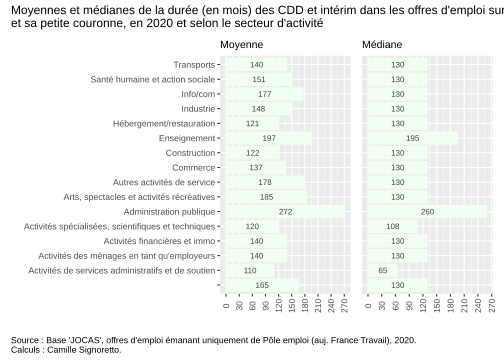
p1 <- OffresPE_2020 %>%
filter(contractType %in% c("CDD", "MIS") & !is.na(contractDuration_value) &
!entrepriseSecteur_NAF21=="U") %>%
group_by(secteurs) %>%
mutate(moy_duree = round(mean(contractDuration_value))) %>%
select(moy_duree, secteurs) %>%
unique() %>%
ggplot() + aes(x = moy_duree, y = secteurs) +
geom_bar(stat="identity", fill="honeydew") +
geom_text(aes(label = moy_duree), position = position_stack(vjust = 0.5), color="gray25", size=2.8) +
scale_x_continuous(breaks=seq(0,275,30)) +
labs(title = "Moyenne", x = " ", y = " ") +
theme(axis.text.x = element_text(angle=90, vjust=0.5, size=8.5),
plot.title = element_text(size=10.5))
p2 <- OffresPE_2020 %>%
filter(contractType %in% c("CDD", "MIS") & !is.na(contractDuration_value) &
!entrepriseSecteur_NAF21=="U") %>%
group_by(secteurs) %>%
mutate(mediane_duree = round(median(contractDuration_value))) %>%
select(mediane_duree, secteurs) %>%
unique() %>%
ggplot() + aes(x = mediane_duree, y = secteurs) +
geom_bar(stat="identity", fill="honeydew") +
geom_text(aes(label = mediane_duree), position = position_stack(vjust = 0.5), color="gray25", size=2.8) +
scale_x_continuous(breaks=seq(0,275,30)) +
labs(title = "Médiane", x = " ", y = " ") +
theme(axis.text.x = element_text(angle=90, vjust=0.5, size=8.5),
plot.title = element_text(size=10.5))
library(patchwork)
(p1 + p2) + plot_layout(axes = "collect") +
plot_annotation(title = "Durée (en mois) des CDD et intérim dans les offres d'emploi sur Paris et sa petite couronne, \nen 2020 et selon le secteur d'activité",
caption = "Source : Base 'JOCAS', offres d'emploi émanant uniquement de Pôle emploi (auj. France Travail), 2020. \nCalculs : Camille Signoretto.",
theme = theme(plot.title = element_text(size = 12),
plot.caption = element_text(hjust = 0)))On observe que ce sont deux secteurs regroupant des activités publiques - administration et enseignement - qui proposent des contrats avec des durées (moyennes et médianes) relativement plus longues, ce qui peut être logique puisque le droit sur la durée des contrats à durée déterminée est justement différent. A l’inverse, deux secteurs des services - “Activités spécialisées, scientifiques et techniques”, et “Activités de services administratifs et de soutien” - présentent des durées moyennes et médianes relativement courtes ; on retrouve ensuite l’hébergement/restauration et la construction pour les moyennes, car les médianes sont toutes identiques au-delà des 4 premiers secteurs cités.
On aurait pu sinon utilser un “dot plot”, comme ci-dessous. Cherchez comment l’on peut construire ce type de graphique (rq : cela ne correspond par à une fonction en tant que telle). Le début du code est le même, ce sont les fonctionsgeom_*** qui changent…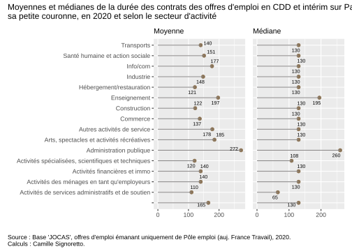
library("ggrepel")
p3 <- OffresPE_2020 %>%
filter(contractType %in% c("CDD", "MIS") & !is.na(contractDuration_value) &
!entrepriseSecteur_NAF21=="U") %>%
group_by(secteurs) %>%
mutate(moy_duree = round(mean(contractDuration_value))) %>%
select(moy_duree, secteurs) %>%
unique() %>%
ggplot() + aes(x =moy_duree , y = secteurs) +
geom_point(color="burlywood4", size=2) +
geom_segment(aes(x=0, xend=moy_duree, y=secteurs), color="snow4") +
geom_text_repel(aes(label = moy_duree), size = 2.5) +
labs(title = "Moyenne", x = " ", y = " ") +
theme(plot.title = element_text(size=10.5))
p4 <- OffresPE_2020 %>%
filter(contractType %in% c("CDD", "MIS") & !is.na(contractDuration_value) &
!entrepriseSecteur_NAF21=="U") %>%
group_by(secteurs) %>%
mutate(mediane_duree = round(median(contractDuration_value))) %>%
select(mediane_duree, secteurs) %>%
unique() %>%
ggplot() + aes(x =mediane_duree , y = secteurs) +
geom_point(color="burlywood4", size=2) +
geom_segment(aes(x=0, xend=mediane_duree, y=secteurs), color="snow4") +
geom_text_repel(aes(label = mediane_duree), size = 2.5) +
labs(title = "Médiane", x = " ", y = " ") +
theme(plot.title = element_text(size=10.5))
(p3 + p4) + plot_layout(axes = "collect") +
plot_annotation(title = "Moyennes et médianes de la durée des contrats des offres d'emploi en CDD et intérim sur Paris et \nsa petite couronne, en 2020 et selon le secteur d'activité",
caption = "Source : Base 'JOCAS', offres d'emploi émanant uniquement de Pôle emploi (auj. France Travail), 2020. \nCalculs : Camille Signoretto.",
theme = theme(plot.title = element_text(size = 12),
plot.caption = element_text(hjust = 0)))8.2.3 Evolution de la durée des contrats des offres d’emploi durant l’année 2020
Changeons un peu de perspective et construisez cette fois un graphique montrant l’évolution de la durée des contrats des offres d’emploi durant l’année 2020 à Paris et sa petite couronne, de manière générale et ensuite selon 6 secteurs choisis selon leur durée médiane mise en avant un peu plus haut : les 3 ayant les durées moyennes les plus élevées (“Administration publique”, “Enseignement”, et “Arts, spectacles et activités récréatives”), et les 3 ayant les durées moyennes les moins élevées (“Activités spécialisées, scientifiques et techniques”, “Activités de services administratifs et de soutien”, et “Hébergement/restauration”).
On peut vouloir le rendre interactif de telle sorte que l’utilisateur puisse voir les valeurs des points en passant la souris dessus : pour cela, il faut installer et charge le package plotly puis utiliserla fonction ggplotly() ; cela nécessite de stocker le graphique dans un objet.
De même, il faut procéder par étapes :
- créer la variable de prix moyen de durée selon le mois ;
- ne garder que ces variables, supprimer les lignes doublons le cas échéant ;
- construir un graphique sous forme de courbes avec des points représentants les valeurs en le stockant dans un objet ;
- appeler la fonction
ggplotly()en utilisant l’argumenttooltip()pour que seule la valeur des “y” soit affichée..
g_evo <- OffresPE_2020 %>%
filter(contractType %in% c("CDD", "MIS") & !is.na(contractDuration_value) &
!entrepriseSecteur_NAF21=="U") %>%
group_by(mois_publication) %>%
mutate(moy_duree = round(mean(contractDuration_value)),
mois_publication = factor(mois_publication,
levels = c("janv.","févr.","mars","avr.","mai","juin",
"juil.","août","sept.","oct.","nov.","déc."))) %>%
select(moy_duree, mois_publication) %>%
unique() %>%
ggplot() + aes(x = mois_publication, y = moy_duree) +
geom_point() + geom_line(group=1) +
scale_y_continuous(limits=c(90,180), breaks = seq(90,180,15)) +
labs(title = "Evolution de la durée moyenne des contrats dans les offres d'emplois en CDD et intérim sur \nParis et sa petite couronne en 2020",
x = " ", y = " ") +
theme(plot.title = element_text(size=12),
plot.caption = element_text(hjust=0))
#install.packages("plotly")
library(plotly)
ggplotly(g_evo, tooltip = c("moy_duree")) %>%
layout(margin = list(l = 50, r = 50, b = 80, t = 50),
annotations = list(text = "Source : Source : Base 'JOCAS', offres d'emploi émanant uniquement de Pôle emploi (auj. France Travail), 2020. \nCalculs : Camille Signoretto. \nNote : l'axe des ordonnées ne commence qu'à 90 jours (3 mois).",
showarrow = F, x = 0, y = -0.2,
xref='paper', yref='paper', xanchor='left', yanchor='auto',
xshift=0, yshift=0, font=list(size=10.5), align="left"))On retrouve un résultat que l’on avait observé précédemment avec la boxplot, à savoir que la durée moyenne des contrats est plus faible en début d’année civiel et connaît deux “pics”, en septembre puis en novembre.
Regardons maintenant selon quelques secteurs d’activité (les 6 mentionnés au-dessus), pour étudier si cette évolution est différente selon la position du secteur dans l’échelle des durées moyennes.
g_evo_pls <- OffresPE_2020 %>%
filter(contractType %in% c("CDD", "MIS") & !is.na(contractDuration_value) &
secteurs %in% c("Administration publique", "Enseignement",
"Arts, spectacles et activités récréatives",
"Hébergement/restauration",
"Activités spécialisées, scientifiques et techniques",
"Activités de services administratifs et de soutien")) %>%
group_by(mois_publication, secteurs) %>%
mutate(moy_duree = round(mean(contractDuration_value),0),
mois_publication = factor(mois_publication,
levels = c("janv.","févr.","mars","avr.","mai","juin",
"juil.","août","sept.","oct.","nov.","déc."))) %>%
select(moy_duree, mois_publication, secteurs) %>%
unique() %>%
mutate(secteurs=factor(secteurs,
levels = c("Administration publique", "Enseignement",
"Arts, spectacles et activités récréatives",
"Activités spécialisées, scientifiques et techniques",
"Activités de services administratifs et de soutien",
"Hébergement/restauration"))) %>%
ggplot() + aes(x=mois_publication, y=moy_duree, color=secteurs) +
geom_line(aes(group=secteurs), linewidth=0.8) +
scale_y_continuous(limits=c(75,425), breaks = seq(75,425,15)) +
labs(title="Evolution de la durée moyenne des contrats dans les offres d'emplois en CDD et missions d'intérim sur Paris \net sa petite couronne en 2020, dans les trois secteurs ayant les moyennes les plus élevées et les 3 secteurs \nayant les moyennes les plus faibles", x = " ", y = " ", color="Secteurs") +
theme(plot.title = element_text(size=10),
legend.title = element_text(size=10),
plot.caption = element_text(hjust=0))
ggplotly(g_evo_pls, tooltip = c("moy_duree")) %>%
layout(margin = list(l = 50, r = 50, b = 80, t = 80),
annotations = list(text = "Source : Source : Base 'JOCAS', offres d'emploi émanant uniquement de Pôle emploi (auj. France Travail), 2020. \nCalculs : Camille Signoretto. \nNote : l'axe des ordonnées ne commence qu'à 75 jours (2 mois et demi).",
showarrow = F, x = 0, y = -0.2,
xref='paper', yref='paper', xanchor='left', yanchor='auto',
xshift=0, yshift=0, font=list(size=9), align="left"))On observe une saisonnalité beaucoup plus importante dans la durée des contrats proposés selon les secteurs, la volatilité la plus grande de la durée moyenne des contrats est présente dans le secteur des “arts, spectacles et activités récréatives”. Cela peut être dû en partie à cette année 2020, particulière du fait de la crise sanitaire du Covid-19. Il faudrait bien sûr creuser davantage pour mieux comprendre ces évolutions de la durée moyenne des contrats proposés selon les secteurs d’activité et les mois.
8.2.4 Top 5 de la durée moyenne des offres d’emploi en CDD et missions d’intérim selon les secteurs d’activité
Enfin, construisez un graphique en bâtons indiquant les seuls 5 premiers secteurs d’activité ayant les durées moyennes des offres d’emploi en CDD et missions d’intérim les plus élevés, puis les durées médianes, et les mettre côte à côte.
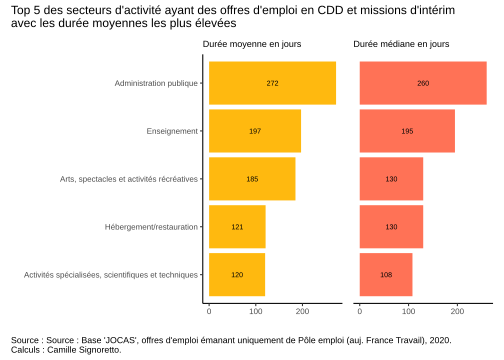
p5 <- OffresPE_2020 %>%
filter(contractType %in% c("CDD", "MIS") & !is.na(contractDuration_value) &
secteurs %in% c("Administration publique", "Enseignement",
"Arts, spectacles et activités récréatives",
"Hébergement/restauration",
"Activités spécialisées, scientifiques et techniques",
"Activités de services administratifs et de soutien")) %>%
group_by(secteurs) %>%
summarise(moy_duree = round(mean(contractDuration_value))) %>%
arrange(desc(moy_duree)) %>% slice(1:5) %>%
ggplot() + aes(x = moy_duree, y = fct_reorder(secteurs, moy_duree)) +
geom_bar(stat="identity", fill="darkgoldenrod1") +
geom_text(aes(label=moy_duree), position = position_stack(vjust=0.5), size=2.5) +
labs(title="Durée moyenne en jours",
x = "", y = " ") +
theme_classic() +
theme(legend.position = "none", plot.title=element_text(size=9),
axis.text.y = element_text(size=8),
axis.text.x = element_text(size=8),
axis.title.x = element_text(size=8))
p6 <- OffresPE_2020 %>%
filter(contractType %in% c("CDD", "MIS") & !is.na(contractDuration_value) &
secteurs %in% c("Administration publique", "Enseignement",
"Arts, spectacles et activités récréatives",
"Hébergement/restauration",
"Activités spécialisées, scientifiques et techniques",
"Activités de services administratifs et de soutien")) %>%
group_by(secteurs) %>%
summarise(mediane_duree = round(median(contractDuration_value)),
moy_duree = round(mean(contractDuration_value))) %>%
arrange(desc(mediane_duree)) %>% slice(1:5) %>%
ggplot() + aes(x = mediane_duree, y = fct_reorder(secteurs, moy_duree)) +
geom_bar(stat="identity", fill="coral1") +
geom_text(aes(label=mediane_duree), position = position_stack(vjust=0.5), size=2.5) +
labs(title="Durée médiane en jours",
x = "", y = " ") +
theme_classic() +
theme(legend.position = "none", plot.title=element_text(size=9),
axis.text.y = element_text(size=8),
axis.text.x = element_text(size=8),
axis.title.x = element_text(size=8))
(p5 + p6) + plot_layout(axes = "collect") +
plot_annotation(title = "Top 5 des secteurs d'activité ayant des offres d'emploi en CDD et missions d'intérim \navec les durées moyennes les plus élevées",
caption = "Source : Source : Base 'JOCAS', offres d'emploi émanant uniquement de Pôle emploi (auj. France Travail), 2020. \nCalculs : Camille Signoretto.",
theme = theme(plot.title = element_text(size = 12))) &
theme(plot.caption = element_text(hjust = 0))On retrouve les mêmes résultats.